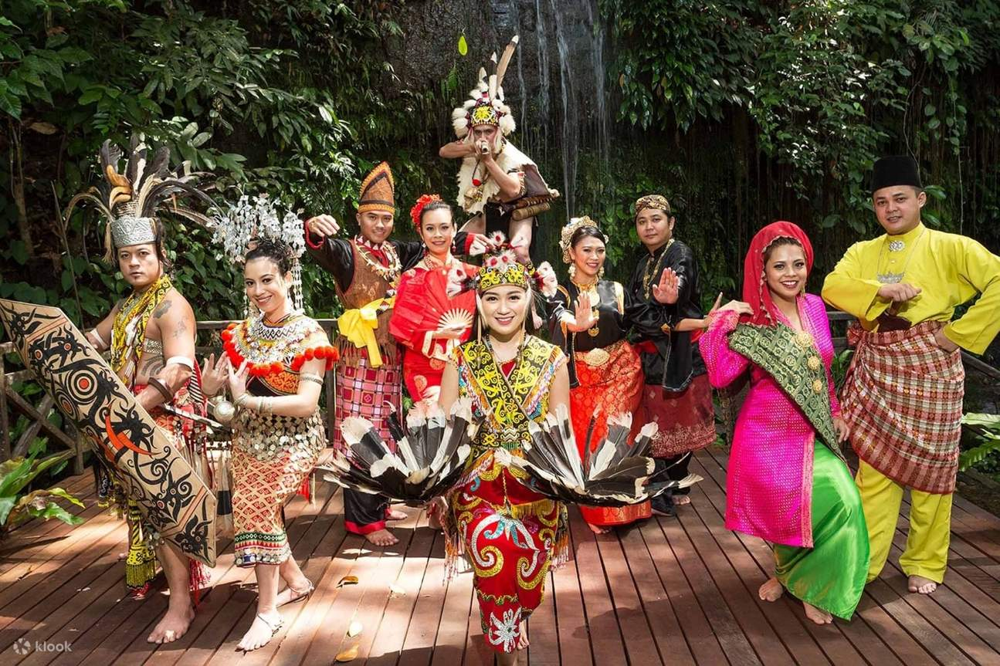
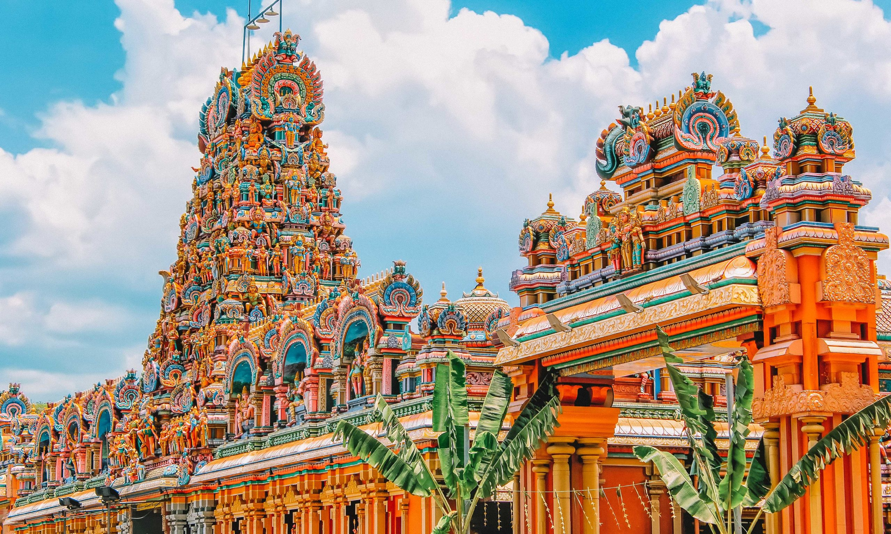

Batu Caves
A limestone hill in Selangor featuring a series of caves, Hindu temples, and a massive golden statue of Lord Murugan. A monumental 272 colorful step climb awaits.
→
George Town
A UNESCO World Heritage site in Penang famous for its well-preserved colonial architecture, vibrant street art, and multicultural roots.
→
Melaka Historic City
Rich in history, Melaka features ruins like A Famosa, the vibrant Jonker Street, and distinct Peranakan culture spread across a coastal port.
→
Thean Hou Temple
One of the oldest and largest temples in Southeast Asia, offering stunning multi-tiered architecture overlooking Kuala Lumpur.
→
Kek Lok Si Temple
The largest Buddhist temple in Malaysia, located in Penang, featuring the striking Pagoda of Ten Thousand Buddhas and a towering Guanyin statue.
→
Sarawak Cultural Village
A 'living museum' at the foothills of Mount Santubong, displaying the traditional homes and lifestyles of Sarawak's ethnic groups like the Iban and Bidayuh.
→
Islamic Arts Museum
Located in Kuala Lumpur, it houses one of the best collections of Islamic decorative arts in the world across a sprawling, airy gallery.
→
Sultan Abdul Samad Building
An iconic Moorish-style building at Dataran Merdeka that once housed the British colonial administration, known for its shining copper domes.
→
Sri Mahamariamman Temple
The oldest Hindu temple in Kuala Lumpur, known for its incredibly detailed, colorful 'gopuram' (tower) filled with deities.
→
Kampung Baru
A traditional Malay village situated right in the heart of modern Kuala Lumpur, famous for authentic local food and an atmosphere untouched by modern scrapers.
→